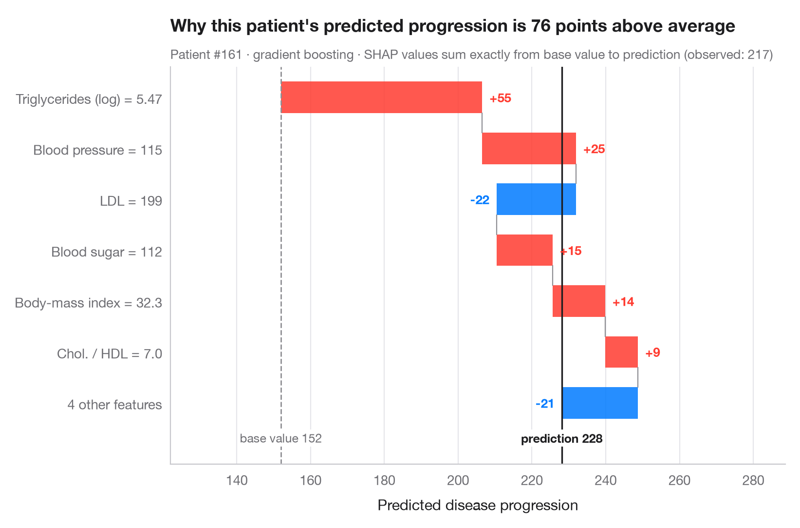

Cascade SHAP pour une prédiction
Comment chaque variable déplace la prédiction d'un patient, de la moyenne jusqu'à la sortie du modèle.

Les graphiques globaux décrivent le modèle ; une cascade explique une prédiction. Elle part de la valeur de base — la prédiction moyenne du modèle sur les données — et ajoute la valeur SHAP de chaque variable, la plus grande d'abord, jusqu'à la prédiction de ce patient. Les barres rouges poussent la prédiction vers le haut, les bleues la tirent vers le bas ; les plus petites contributions sont regroupées en une barre pour garder le graphique lisible. Les valeurs SHAP étant additives, les barres somment toujours exactement l'écart entre la valeur de base et la prédiction.
C'est le graphique à montrer quand une décision individuelle doit être justifiée — un prêt, un diagnostic, une transaction signalée. Il explique ce qu'a fait le modèle, pas pourquoi le résultat se produit. Les données sont les 442 patients diabétiques fournis avec scikit-learn ; le modèle est un gradient boosting ; les valeurs SHAP viennent de shap.TreeExplainer. Le patient présenté est un cas à risque élevé (plus de 60 points au-dessus de la valeur de base), choisi parce que son explication tire dans les deux sens.
Le code et le texte à l'intérieur des figures sont en anglais.
import matplotlib.pyplot as plt
import numpy as np
import shap
from sklearn.datasets import load_diabetes
from sklearn.ensemble import GradientBoostingRegressor
data = load_diabetes(as_frame=True, scaled=False)
X, y = data.data, data.target
names = {"age": "Age", "sex": "Sex", "bmi": "Body-mass index", "bp": "Blood pressure",
"s1": "Total cholesterol", "s2": "LDL", "s3": "HDL", "s4": "Chol. / HDL",
"s5": "Triglycerides (log)", "s6": "Blood sugar"}
fmt = {"age": "{:.0f} y", "sex": "{:.0f}", "bmi": "{:.1f}", "bp": "{:.0f}", "s1": "{:.0f}",
"s2": "{:.0f}", "s3": "{:.0f}", "s4": "{:.1f}", "s5": "{:.2f}", "s6": "{:.0f}"}
model = GradientBoostingRegressor(learning_rate=0.05, n_estimators=300, max_depth=2,
subsample=0.8, random_state=0).fit(X, y)
explainer = shap.TreeExplainer(model)
base = float(np.ravel(explainer.expected_value)[0])
all_sv = explainer.shap_values(X)
# A high-risk patient whose explanation has pushes in both directions
high = np.where(all_sv.sum(axis=1) > 60)[0]
p = int(high[np.argmin(all_sv[high].min(axis=1))])
sv = all_sv[p]
# Largest contributions first; pool the rest
k = 6
idx = np.argsort(np.abs(sv))[::-1]
top, rest = idx[:k], idx[k:]
labels = [f"{names[X.columns[j]]} = {fmt[X.columns[j]].format(X.iloc[p, j])}" for j in top]
values = list(sv[top])
if len(rest):
labels.append(f"{len(rest)} other features")
values.append(sv[rest].sum())
fig, ax = plt.subplots(figsize=(8, 5.2))
start = base
for i, (lab, v) in enumerate(zip(labels, values)):
c = "#FF3B30" if v > 0 else "#007AFF"
ax.barh(i, v, left=start, color=c, alpha=0.85, height=0.62)
ax.text(start + v + (2 if v > 0 else -2), i, f"{v:+.0f}", va="center",
ha="left" if v > 0 else "right", fontsize=9.5, color=c, fontweight="semibold")
if i < len(values) - 1:
ax.plot([start + v] * 2, [i + 0.31, i + 0.69], color="#8E8E93", lw=0.8)
start += v
ax.axvline(base, color="#8E8E93", ls="--", lw=1)
ax.axvline(start, color="#1d1d1f", lw=1.2)
bottom = len(labels) - 0.45
ax.text(base, bottom, f"base value {base:.0f}", ha="center", va="top", fontsize=9, color="#6E6E73",
bbox=dict(fc="white", ec="none", pad=1))
ax.text(start, bottom, f"prediction {start:.0f}", ha="center", va="top", fontsize=9,
color="#1d1d1f", fontweight="semibold", bbox=dict(fc="white", ec="none", pad=1))
ax.set_yticks(range(len(labels)), labels)
ax.set_ylim(len(labels) + 0.2, -0.6)
lo_x = min(base, *(base + np.cumsum(values)))
ax.set_xlim(lo_x - 30, max(start, base + np.cumsum(values).max()) + 40)
ax.set_xlabel("Predicted disease progression")
ax.grid(axis="x"); ax.grid(axis="y", visible=False)
ax.set_title(f"Why this patient's predicted progression is {start - base:.0f} points above average", pad=26)
ax.text(0, 1.02, f"Patient #{p} · gradient boosting · SHAP values sum exactly from base value to prediction "
f"(observed: {y.iloc[p]:.0f})", transform=ax.transAxes, fontsize=9.5, color="#6E6E73")
plt.show()
Les figures utilisent le style PyStatlas (facultatif) : ajoutez plt.style.use("pystatlas.mplstyle") pour obtenir exactement le même rendu.
Comment citer
PyStatlas est créé et maintenu par Thierry Warin. S'il vous a été utile dans vos travaux, merci de le citer.
Warin, T. (2026). SHAP waterfall for one prediction. In PyStatlas: The Python Gallery of Statistical Graphics. https://warint.github.io/pystatlas/machine-learning/shap-waterfall/
@misc{warin2026statlas,
author = {Warin, Thierry},
title = {PyStatlas: The Python Gallery of Statistical Graphics},
year = {2026},
howpublished = {\url{https://warint.github.io/pystatlas/}},
note = {Source code: https://github.com/warint/pystatlas}
}Plus dans Apprentissage automatique

Matrice de confusion avec indicateurs
Matrice de confusion hors échantillon, avec effectifs et parts par ligne, et intervalles bootstrap pour les principaux indicateurs.
yardstick::conf_mat() + autoplot()
Courbes précision–rappel
Courbes précision–rappel hors échantillon pour deux classifieurs, avec précision moyenne et référence sans compétence.
yardstick::pr_curve() + autoplot()
Courbe d'apprentissage
Score d'entraînement et score en validation croisée à mesure que l'échantillon d'entraînement grandit, avec la dispersion entre plis.
caret::learning_curve_dat() + ggplot()